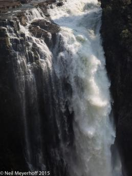
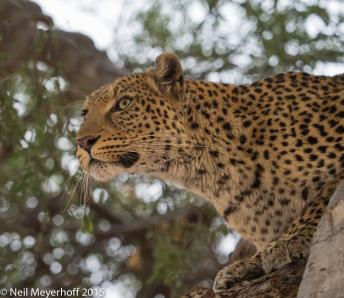
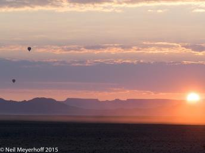

%1
The Sri Dalada Maligawa, (Temple of the Sacred Tooth Relic) holds Sri Lanka's most important relic, a tooth from the Buddha. These Buddha statues are gift from Thailand, and the elephant tusks are from elephants that carried the tooth reliquary in festival parades. The temple was originally built around 1600CE, but has been rebuilt several times since then. Olympus OMD EM-1, 1/30@f2.8, 16mm, ISO 640  Click image to enlarge. |
|||
The volume of water coming over the falls is so immense and fast, even in the low water season, I needed a very fast shutter speed to attempt to keep the water from being blurred. Olympus EMD OM-1, 1/5000@f2.8, 30mm, ISO 200 Click image to enlarge. |
|||
Just two minutes from camp we found this leopard in a tree where he was looking for prey. It was about 7AM and there was not much light at this point, so I needed a high ISO to get a high enough shutter speed to hold the camera steady as I was shooting at the 35mm equivalent focal length of 420mm. Olympus OMD EM-1, 1/1/25@f4.0, 210mm, ISO 1000 Click image to enlarge. |
|||
These hot air balloons are rising above the desert floor to get a early morning aerial view of the famous Sossusvlei sand dunes in the Namib Naukluft National Park. Olympus OMD, EM-1, 1/250@f6.3, 95mm, ISO 400 Click image to enlarge. |
|||
Hout Bay, on the Atlantic side of Cape Town, was originally a source of lumber for the Dutch colonists of Cape Town. this view is from the Chapman's Peak Overlook on the M6 roadway. Olympus OMD, EM-1, 1/640@f6.3, 32mm, ISO 200  Click image to enlarge. |
|||
Bhutanese schools teach most of their classes in English, so here, on the second day of the tsechu (religious festival) outside of Jakar, in the Bumthang district of central Bhutan, this girl, along with others, began to ask my wife many questions about her hair, make-up, etc. The second day of the festival was sparsely attended, so we could really talk with some of the Bhutanese. The vertical panoramic photograph was taken with a Hasselblad X-pan camera. Click image to enlarge. |
|||
This temple is one of the many located throughout the city of Kyoto, Japan. As the city was not fire bombed by the US during World War Two, Kyoto has more centuries-old temples than elsewhere in Japan. This night time panoramic photograph was created with a Hasselblad X-pan camera on a tripod. Click image to enlarge. |
|||
This man is carrying a cross made of tree branches through the streets of Queretaro during Holy Week in memory of Jesus. The men wear robes of either black, red, or white. This photograph was taken with a Hasselblad HD-31 camera using a 21mm lens. Click image to enlarge. |
|||
This temple is in central Hanoi, Vietnam near the now closed Catholic Cathedral.  Click image to enlarge. |
|||
The beach at Coney Island, Queens, NY. This photograph was taken with a Hasselblad H3D with a 31 megapixel back & 50mm lens, at 1/250 @f18.  Click image to enlarge. |
|||